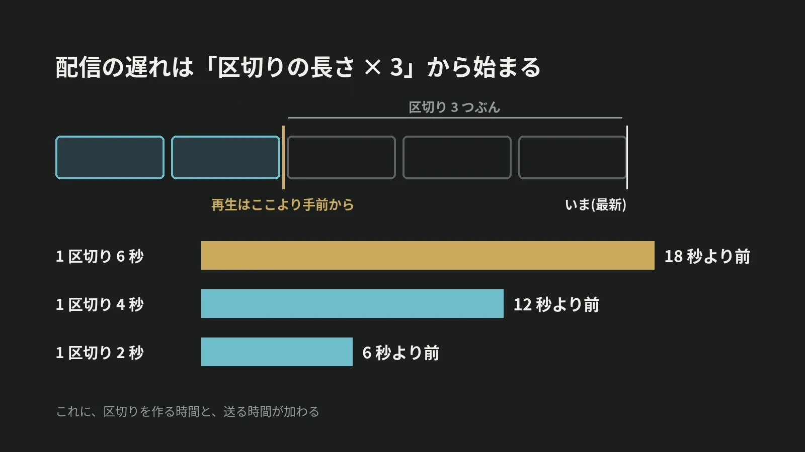

LOTUS VISUAL JOURNAL / 現場の裏側 #25
配信は、なぜ会場より
遅れて届くのか。
「3 つぶん手前から」という決まり
結論から。ネット配信の方式の 1 つ、HLS は、映像を数秒ごとの小さなファイルに区切って送ります。再生する側には、「最新から数えて 3 つぶんより手前から再生を始める」という決まりがあります。
区切りが 6 秒なら、遅れは 18 秒から。故障ではなく、設計です。
01 / SEGMENTS映像は、区切って運ばれる
ネット配信の方式の 1 つに、HTTP Live Streaming(HLS)があります。その仕組みは、2017 年 8 月の技術文書 RFC 8216 にまとめられています。
この方式では、映像と音を「メディアセグメント」という短いファイルに区切ります。区切りの並び順は「プレイリスト」という目次に書かれ、どちらもふつうの Web ページと同じ仕組みで配られます。再生する側は、目次を読み直しては、新しい区切りを取りに行きます。区切りの長さの上限は、目次の中の「ターゲット・デュレーション」という値で示されます。
02 / THREE BACK「3 つぶん手前から」
RFC 8216 には、生配信を再生し始める位置についての決まりがあります。ふつうに再生するとき、再生する側は、目次の終わりから「ターゲット・デュレーション 3 つぶん」より近い位置で始まる区切りを、選ぶべきではない。配る側にも、目次の長さがその 3 倍を下回るような消し方をしてはならない、という決まりがあります。
この決まりに従うと、再生は最新から 3 つぶん以上手前で始まります。上限が 6 秒なら 18 秒、4 秒なら 12 秒、2 秒なら 6 秒。目次に載った区切りは、すぐに取り出せなければならない決まりもあります。区切りは作り終えてから目次に載るので、その時間と、送る時間が加わります。
03 / WHYわざと遅らせる理由
RFC 8216 は、理由も短く書いています。それより近い位置から始めると、再生が止まることがある、と。
手前から始めれば、再生する側は、まだ再生していない区切りを手元に持ったまま進めます。電話のように「いま」を届けるのではなく、少し前の映像を、止めずに届ける。配信の遅れは、再生を止めないために置かれた余裕です。
04 / TRADE-OFF遅れを縮める方法と、その代わり
縮める方法の 1 つは、区切りを短くすることです。上限を 2 秒にすれば、3 つぶんは 6 秒になります。
もう 1 つ、この文書の改訂版として公開されている草案「HTTP Live Streaming 2nd Edition」(第 22 版、2026 年 5 月 1 日)には、「低遅延モード」が書かれています。区切りをさらに細かい「パーシャルセグメント」に分けて先に渡し、目次の読み直し方も工夫して、生の映像との差を小さくする仕組みです。
低遅延モードでは、再生を始める位置も細かい区切りで数えます。草案は、最新から「細かい区切り 2 つぶん以上」手前と定め、3 つぶん以上を勧めています。手前に置く長さが短くなるぶん、次の区切りが遅れたときに使える映像も短くなります。配る側にも、細かい区切りを出す、目次の読み直しを待たせる、次に来る区切りを先に知らせる、という 3 つの働きが要ります。遅れを何秒まで許せるかは、催しの中身から決めます。
05 / ON SITELOTUS VISUAL へのご相談では
LOTUS VISUAL へのご相談では
会場と配信を同時に行うご相談では、遅れを前提に 3 つを決めます。1 つめ、登壇者や進行の方が見る画面には、配信から戻ってきた映像を使わず、会場の映像を直接出すこと。2 つめ、配信の視聴者に向けた合図(質問の受付、投票の締め切り、カウントダウン)には、遅れのぶんの余裕を入れること。3 つめ、リハーサルで実際の遅れを計り、その秒数を進行表に書いておくこと。
06 / TAKEAWAY今日の持ち帰り
今日の持ち帰り
- 配信の映像は、区切って運ばれる。短いファイルと、その目次で届く。
- 再生は、3 つぶん以上手前から。区切りの上限が 6 秒なら 18 秒、2 秒なら 6 秒。遅れは故障ではなく設計。
- 遅れを計って、進行表に書く。配信の向こうへの合図には、その秒数の余裕を入れる。